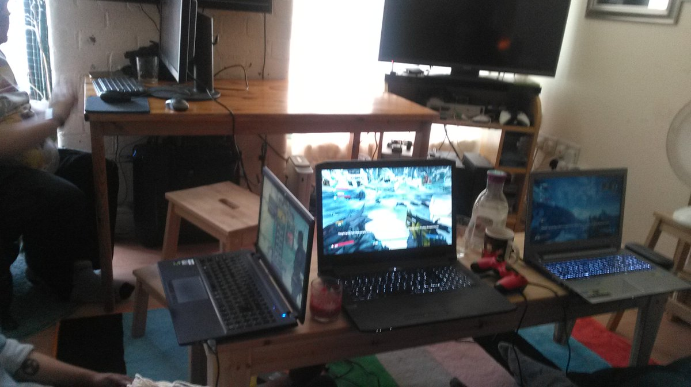

Some sort of pirate willy explosion? This may turn into a coop manic miner tribute.
#gamedev #fundev
Last night was all https://www.youtube.com/watch?v=76wSk1j02_4 Tonight is going to be all https://www.youtube.com/watch?v=gm7rmRgm5TY #bradford @infest_uk :)
https://twitter.com/sgtruck/status/769496903696392192 @sgtruck friction easy, Teleporter accidents leading to brundlefly like abominations is the problem. https://www.youtube.com/watch?v=Ovh_juW2rpU
The first rule of Physics Club is:You do not fall through the floor. The second rule of Physics Club is:The first rule is hard to simulate.
Now featuring a half working lua binding for @chipmunk2d :)
#gamedev #fundev
Added shadertoy inputs to the "copper" layer.
EG -> https://www.shadertoy.com/view/Ms2SD1
#gamedev #fundev
http://store.steampowered.com/app/426790
Looks like Grow Up is out. :)
https://twitter.com/wetgenes/status/765454457933033473 Scanline style filters and bloom really do go hand in hand, the filter darkens everything and then the bloom brightens it back up. :)
and of course bloom without scanlines is a like a soft boiled egg without sweet soy sauce.
#gamedev #fundev
@CharlotteGore Well gif is a pretty terrible format for video, it would be better if you could just tell twitter to loop/repeat video.
Wowsers, bloom sure makes gifs far too large. #gamedev #fundev
oh, twitter is really only happy with gifs?
Obviously we will need copper style backgrounds.
#gamedev #fundev
https://twitter.com/shi/status/764895325479923713 @shi a couple of meg, twitter turns it into an mp4 anyhow so we might as well upload mp4.
GIF export test, yay :)
However this reminds how much I dislike GIF.
The PNG peeps really need to accept APNG.
@CharlotteGore Borderlands 2, there are only a handful of coop games that support 4 players and borderlands is the top pick.
Game on .
OK, this was last Saturday but give it a couple of hours and I'm sure this Saturday will be the same :)

Well this sure looks like a good excuse to play through the first dead rising again :) http://store.steampowered.com/app/427190/
https://twitter.com/PixelGuff/status/763133484986724352 @PixelGuff yeah so step one is swap all the mouse buttons around (this is complicated by the fact that sometimes they are already swapped)